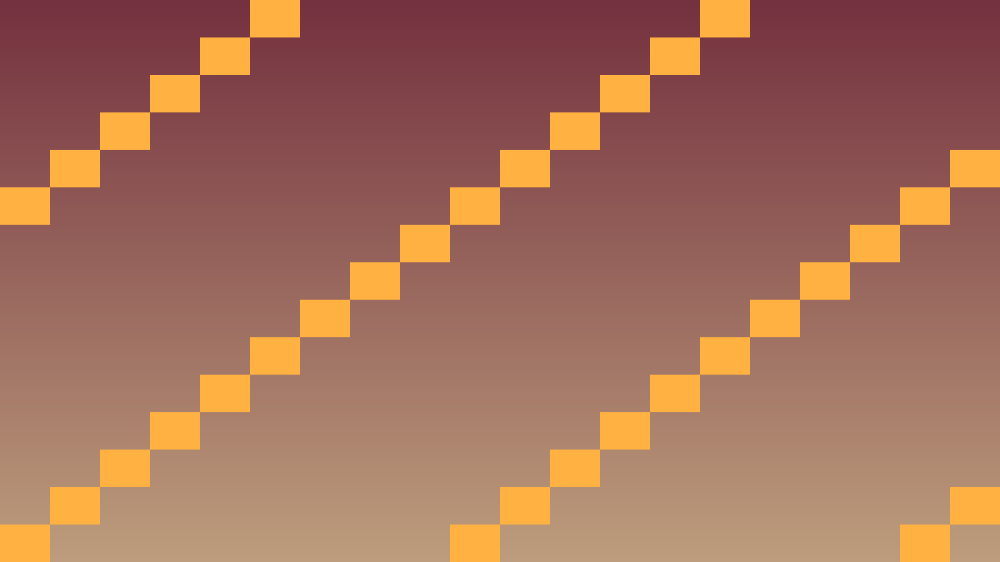
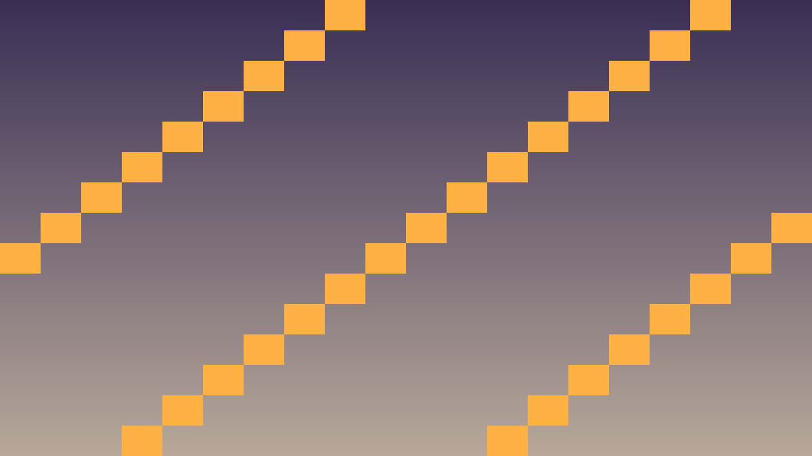
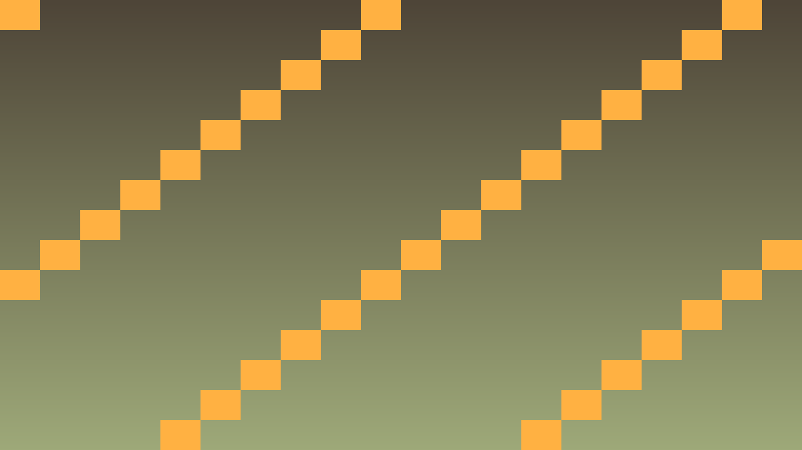

6.6 Noslēguma project (projekts): Puzzle game (atjautības spēle)
Stundas uzdevums: Izveidot un publicēt pilnvērtīgu puzzle game (atjautības spēli) ar visu apgūto.
80 min plāns: Ievads un kritēriju pārruna (~10 min) · 1. uzdevums (~20 min) - izvēlies puzli un uztaisi laukumu · 2. uzdevums (~25 min) - uzraksti uzvaras noteikumu un līmeņus · 3. uzdevums (~20 min) - pievieno menu (izvēlni), audio (skaņu) un eksportē · Iesniegšana (~5 min).
Pirms sāc: šis ir visa kursa noslēguma project (projekts). Izvēlies VIENU puzles veidu un uztaisi to pilnībā - labāk viena pabeigta spēle nekā trīs iesāktas. Izmanto visu, ko esi apguvis.
Teorija: Spēles apraksts
Puzzle game (atjautības spēle): spēlētājs risina sēriju problēmu, kā Sokoban, Tetris vai krāsu match-3.
Izvēlies vienu no opcijām (vai izveido savu):
- Sokoban - bīdi kastes uz mērķa vietām.
- Match-3 - savieno 3+ vienādas krāsas.
- Tetris klons - krītošie bloki.
- Sliding puzzle (atjautības uzdevums) - 4×4 attēla mozaīka.
Prasības:
- Sākuma menu (izvēlne), settings (iestatījumi), augstākie rezultāti.
- Vismaz 10 līmeņi (Sokoban) vai endless mode (režīms) (Match-3, Tetris).
- Audio (skaņa): mūzika + 5+ SFX (skaņas efekts).
- Animation (animācijas)/Tween (pakāpeniska vērtību maiņa) efekti.
- Save (saglabāt) system (sistēma) (highscore (rekords) + progress).
- Eksportēta kā desktop (darbvirsma) build (būvējums) un publicēta lejupielādējamā itch.io lapā.
Kā šo izmantot project (projektā)
Atceries: ar redzamu efektu editor (redaktorā) nepietiek. Paskaidro, kura C# class (klase) glabā state (stāvokli), kura method (metode) to maina un kā Godot node (mezgls) structure (struktūra) izmanto šo code (kodu).
Pārbaudi: UI (lietotāja saskarne) signal (signāli), audio (skaņa) darbības, debug (atkļūdošana) output (izvade) un publishing (publicēšanas) template (sagatave) ir sasaistīta ar C# game state (spēles stāvokli).
public class PolishCheckpoint
{
public string Lesson = "6.6 Noslēguma projekts: Puzzle spēle";
public bool UsesCSharp = true;
public bool ConnectsUiSignals = true;
public bool RoutesAudioEvents = true;
public bool VerifiesExportBuild = true;
}Praktiskie uzdevumi
1. uzdevums -
Izvēlies puzli un uztaisi laukumu
Beigās tev būs spēles laukums, ko var apskatīt un ar ko darboties.
- Izvēlies vienu variantu: Sokoban, Match-3, Tetris klons vai 4x4 mozaīka.
- Izveido README.md file (failā) īsu laukuma plānu: kā izskatīsies laukums un kas ir uzvara.
- Izveido grid (režģi) ar
int[,] grid = new int[Width, Height];. - Attēlo grid (režģi) uz screen (ekrāna) ar
TileMap(flīžu karte) vaiColorRectnode (mezgliem). - Pievieno vadību, kas maina grid (režģa) saturu.
- Palaid un pārbaudi, ka screen (ekrāns) atbilst grid (režģa) saturam.
- Pārliecinies, ka nevar izdarīt neatļautu gājienu.
Gatavs, kad: screen (ekrānā) redzamais laukums vienmēr atbilst grid (režģa) data (datiem), un neatļauts gājiens netiek pieņemts.
2. uzdevums -
Uzraksti uzvaras noteikumu un līmeņus
Beigās spēli varēs pabeigt un pāriet uz nākamo līmeni.
- Uzraksti method (metodi)
private bool IsSolved(), kas pārbauda uzvaras condition (nosacījumu). - Izsauc to pēc katra gājiena.
- Parādi uzvaras paziņojumu, kad tas atgriež
true(patiess). - Izveido vismaz trīs līmeņus - vai nu file (failā), vai code (kodā).
- Ielādē nākamo līmeni pēc uzvaras.
- Pievieno gājienu skaitītāju un button (pogu) Sākt no jauna.
- Izej visus trīs līmeņus pēc kārtas.
Gatavs, kad: visus trīs līmeņus var atrisināt, uzvara tiek atpazīta pareizi, un restart (restarta) button (poga) strādā.
3. uzdevums -
Pievieno menu (izvēlni), audio (skaņu) un eksportē
Beigās tava spēle būs pabeigts, izdodams produkts.
- Pievieno main menu (sākuma izvēlni) no 6.1 stundas.
- Pievieno sound effect (skaņas efektu) gājienam un uzvarai no 6.3 stundas.
- Pievieno animation (animāciju) uzvaras brīdim no 6.2 stundas.
- Saglabā labāko rezultātu ar 5.3 stundas
SaveManager. - Eksportē spēli kā desktop (darbvirsma) build (būvējums) pēc 6.5 stundas soļiem.
- Publicē ZIP (saspiests arhīvs) archive (arhīvu) itch.io lapā un pārbaudi download (lejupielādi) citā computer (datorā).
- Veic commit (izmaiņu fiksējums) un push (nosūtīšana uz attālo krātuvi) ar visu project (projektu).
Gatavs, kad: spēle sākas ar menu (izvēlni), skan audio (skaņas), labākais rezultāts saglabājas, un publiskā download (lejupielādes) link (saite) strādā.
Papildu uzdevums - Pievieno padoma button (pogu)
Ja pamatdarbs ir gatavs, palīdzi spēlētājam, kurš iestrēdzis.
- Uzraksti method (metodi), kas atrod vienu derīgu nākamo gājienu.
- Pievieno button (pogu) Padoms, kas to izceļ uz screen (ekrāna).
- Ierobežo padomu skaitu vienā līmenī.
- Parādi, cik padomu vēl atlicis.
- Pārbaudi, ka pēc padomu beigām button (poga) vairs nedarbojas.
Gatavs, kad: padoma button (poga) izceļ derīgu gājienu un pēc noteikta reižu skaita pārstāj darboties.
Ko sagatavo
Stundas mērķis: Tev ir pabeigta un publicēta puzles spēle: strādājošs laukums, pareizi atpazīta uzvara, vismaz trīs atrisināmi līmeņi, main menu (sākuma izvēlne), audio (skaņa), saglabāts labākais rezultāts un publiska download (lejupielādes) link (saite).
GitHub repository (krātuvē) jābūt:
- README.md ievietota publiskā download (lejupielādes) link (saite) uz spēli, kas strādā skolotāja computer (datorā).
- Viss source code (pirmkods) ar C# script (skriptiem), scene (scēnām) un project (projekta) file (failiem).
- README.md ievietota video link (saite), kurā izej vismaz vienu līmeni no main menu (sākuma izvēlnes) līdz uzvarai.
- Īss apraksts (5-8 teikumi): kuru puzli izvēlējies, kā darbojas uzvaras pārbaude, kas bija visgrūtāk un kā to atrisināji.
Kā iesniedz: Veic commit (izmaiņu fiksējums) un push (nosūtīšana uz attālo krātuvi). Skolotāja norādītajā vietā ievieto tikai GitHub repository (krātuves) link (saiti); visiem prasītajiem file (failiem), README.md pierakstiem un pierādījumiem jābūt pašā repository (krātuvē).
Biežākās kļūdas
- Build (būvēt projektu) archive (arhīvā) trūkst file (failu): ZIP (saspiests arhīvs) liec visu eksportēto folder (mapi), ne tikai palaižamo file (failu).
- Save (saglabāt) file (fails) neielādējas pēc export (eksportēšanas): Pārbaudi, vai tiek lietots
user://, nevis project (projekta) folder (mape). - Vadība nav skaidra: Pievieno spēles lapā īsu key (taustiņu) aprakstu un pārbaudi ar klasesbiedru.
Godot screenshot (ekrānuzņēmumi)



Code sample (koda piemērs) (paplašināts)
using Godot;
using System;
using System.Collections.Generic;
// Match-3 spēles core
public partial class Match3Board : Node2D
{
private const int Width = 8;
private const int Height = 8;
private readonly int[,] grid = new int[Width, Height];
private readonly Random rng = new();
public void Initialize()
{
for (int x = 0; x < Width; x++)
for (int y = 0; y < Height; y++)
grid[x, y] = rng.Next(0, 5); // 5 colors
}
public List<Vector2I> FindMatches()
{
List<Vector2I> matches = new();
for (int x = 0; x < Width; x++)
{
for (int y = 0; y < Height - 2; y++)
{
if (grid[x, y] == grid[x, y + 1] && grid[x, y + 1] == grid[x, y + 2])
{
matches.Add(new Vector2I(x, y));
matches.Add(new Vector2I(x, y + 1));
matches.Add(new Vector2I(x, y + 2));
}
}
}
// similarly for horizontal
return matches;
}
public void ClearAndDrop(List<Vector2I> matches)
{
// mark cleared, gravity, refill
}
}